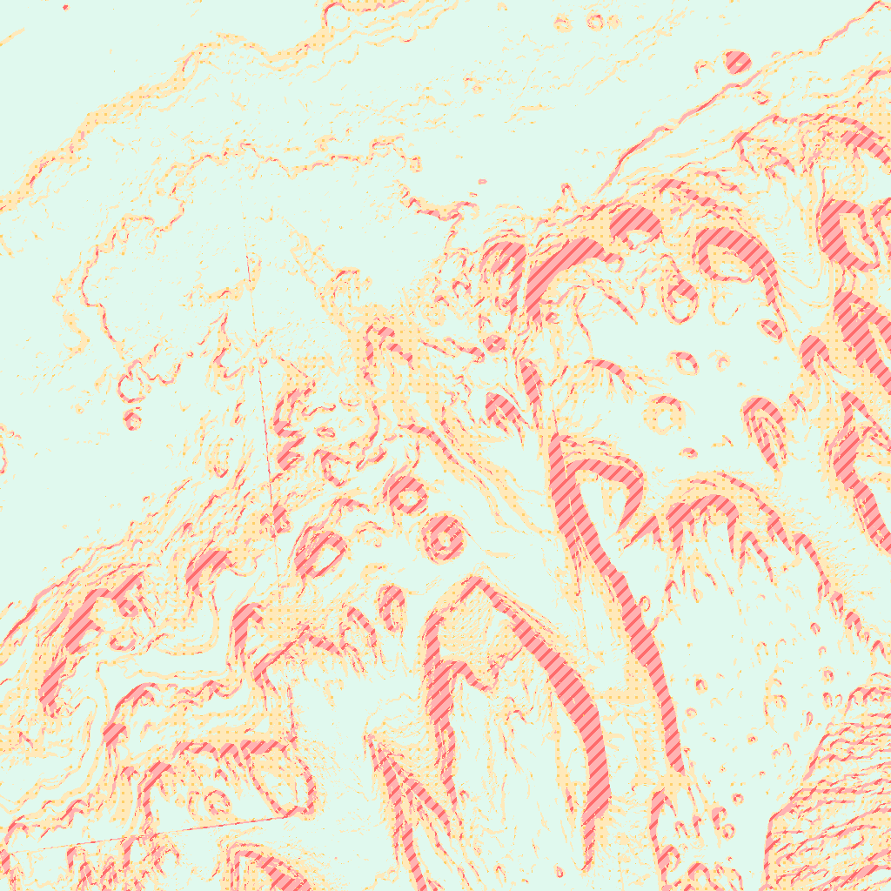
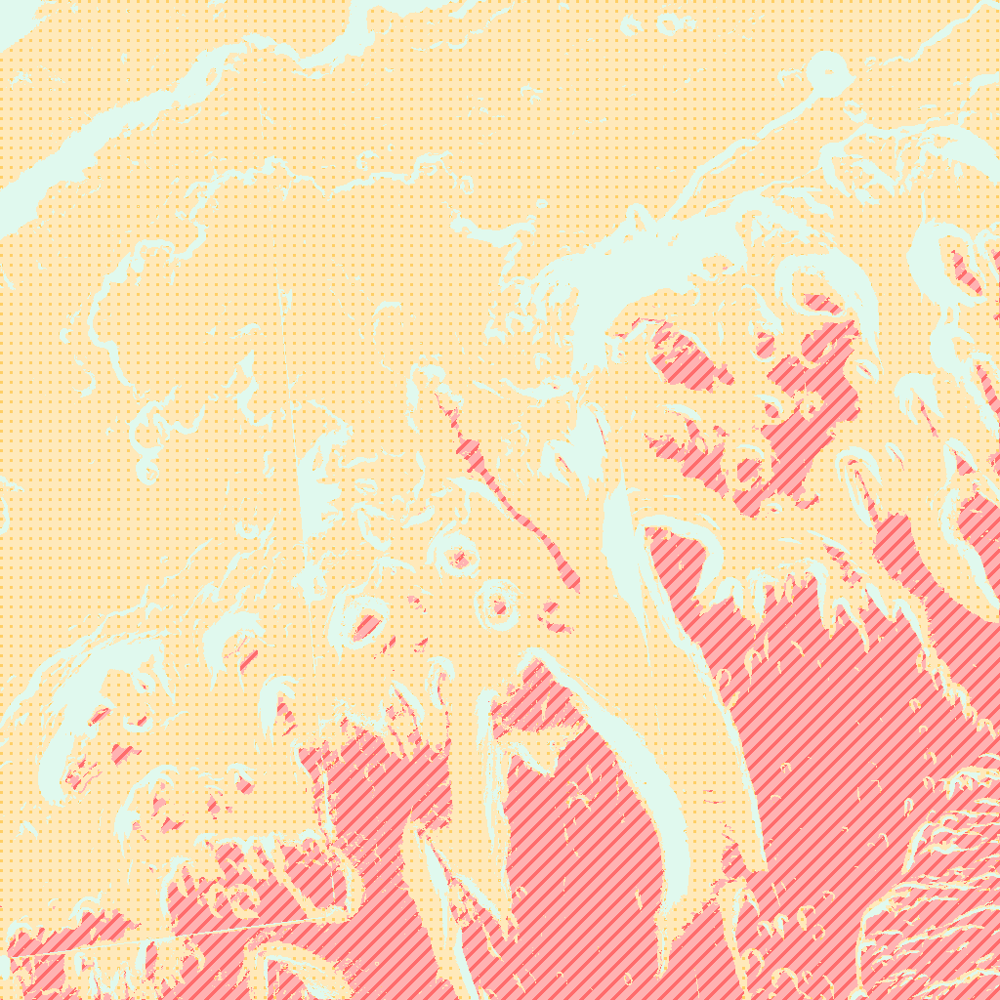
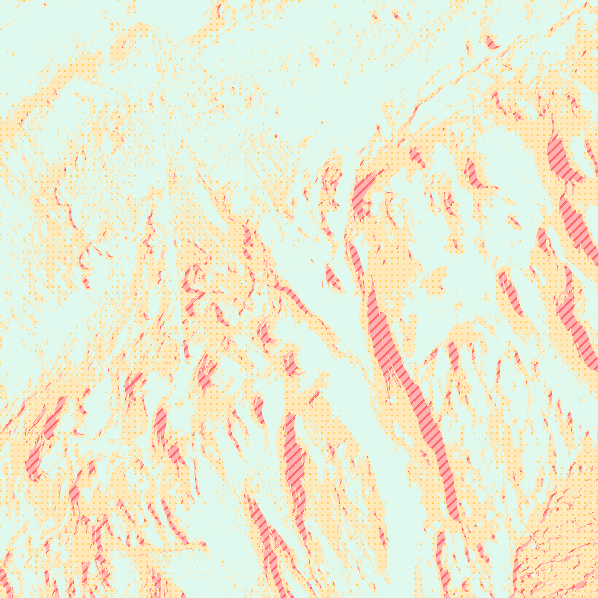
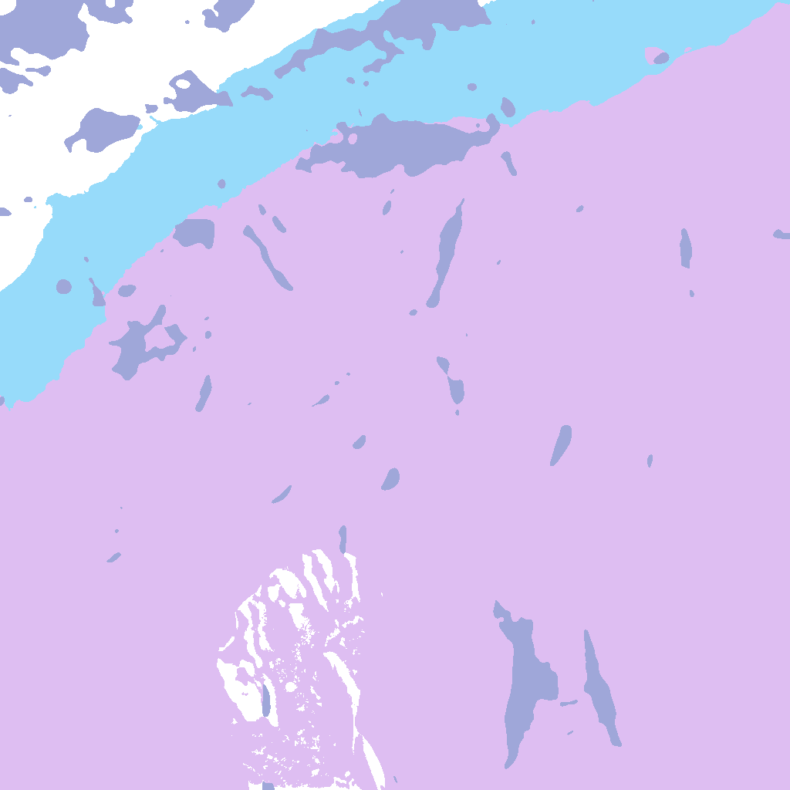

Miembro 4 · v1. Usan los datos reales del proyecto: public/layers/optical.png, los overlays de cada capa y las posiciones de objectives.json. Cada número del marco corresponde a una nota de la derecha. En la pantalla de juego, las teclas 1–4 y R funcionan.
Camina por donde va Curiosity. Lee los datos de NASA. Vuelve con vida.
Sube a la unidad de sulfatos y toma la lectura. Ojo: el Sol está muy activo. Si llega una tormenta de partículas, corre al refugio más cercano.

Rayas = más de 25°: no se puede pasar. Puntos = lento y gasta más O₂.
Fuente: DTM HiRISE + CTX

Liso = el terreno tapa parte del cielo. Rayas = zona expuesta. Importa sobre todo en una tormenta solar.
Fuente: RAD (Curiosity)

Rayas = suelo bajo −45 °C: la calefacción gasta energía extra. Busca laderas al sol.
Fuente: REMS (Curiosity)

■ arcillas · ■ sulfatos · ■ boxwork · ■ dunas. Tus objetivos están sobre su mineral.
Fuente: estratigrafía de Curiosity
Las muestras cuentan la historia del agua en Marte: lagos, canales y agua subterránea a lo largo de cientos de millones de años.
| Ciencia (5 misiones) | 800 |
| Bono de seguridad | +62 |
| Bono de tiempo (19 min) | +10 |
| Tormenta en refugio | +50 |
| Total | 922 |
El traje activó el rescate automático y el rover vino por ti.
Planifica tu regreso antes de bajar del 40 % de O₂. La ruta R evita las pendientes que más oxígeno gastan.